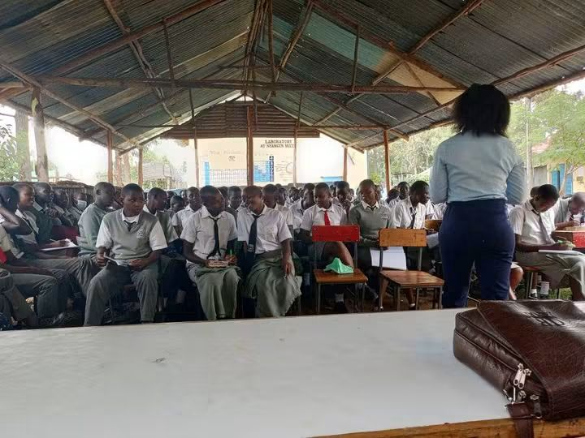
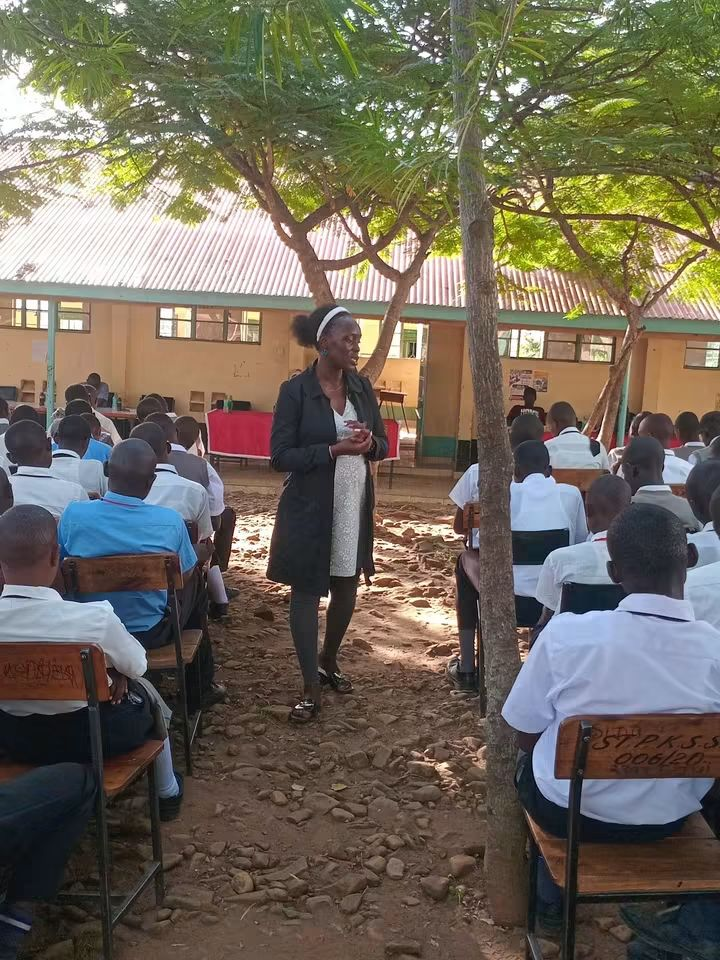
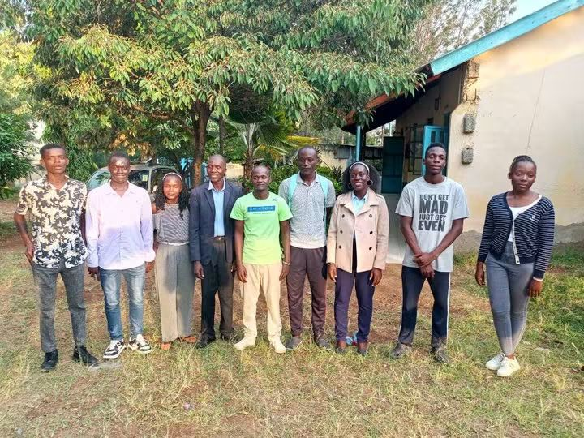

Participants
Young people, students, mentors and community partners.
UPYA Gallery • Youth Development
Empowering young people through guidance, knowledge and opportunity
A collection of moments from UPYA's youth mentorship activities, bringing young people together with mentors, professionals and community leaders to learn, connect and discover their potential.
About the Album
Mentorship is one of the ways UPYA creates opportunities for young people to learn from experience, build confidence and develop practical skills for their future.
Through school visits, youth forums, career conversations and community activities, UPYA seeks to connect young people with knowledge and people who can inspire positive change.
Programme Highlights
Young people, students, mentors and community partners.
Personal development, education, careers and life skills.
Mentorship, conversations, learning and practical engagement.
Equip young people to make informed and positive choices.
What Happens
UPYA mentorship creates space for young people to ask questions, share experiences and interact with people who can help them understand the opportunities available to them.
Moments That Matter
Explore moments captured during UPYA's youth mentorship activities.





Our Aim
We believe every young person deserves access to knowledge, encouragement and opportunities that can help them shape a better future.
Through mentorship, UPYA continues to create spaces where young people can learn, ask questions, build relationships and become active contributors to their communities.